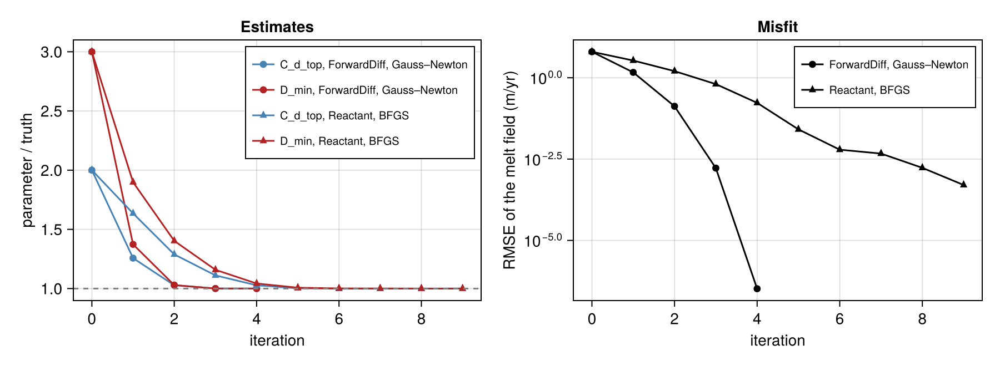

Inverse problems
Laddie.jl can be differentiated, so its parameters can be estimated from data by gradient-based optimisation. Two tools do the differentiation, and the number of parameters decides which one to use:
- ForwardDiff.jl, for a small number of parameters. Forward mode carries one derivative direction per parameter through the run, so it costs about one run per parameter. It works on the plain CPU and CUDA backends, needs no compilation step, and gives the whole Jacobian of a field at once.
- Reactant.jl (with Enzyme), for a large number of parameters. Reverse mode gives the gradient of a scalar misfit with respect to every input at once for a fixed cost of about ten runs, whether the inputs are two coefficients or a field (see Reactant backend).
Both are shown on the same twin experiment. A run with known parameters produces the "observations"; the estimation starts from a wrong guess and has to recover them.
- Model: ISOMIP+ warm on an 80 × 20 grid, 10 days from rest at
dt = 210 s. - Observations: the melt-rate field: the melt rate of every ice-covered cell, averaged over the 10 days (1400 values).
- Misfit:
J = ½ Σᵢ (mᵢ − mᵢᵒᵇˢ)²over the cells, which isN · RMSE² / 2: minimising it minimises the root-mean-square error of the melt field. The optimisers work onJrather than on the RMSE, whose square root has a kink at a perfect fit, which a twin experiment converges to; the progress is reported as RMSE. - Unknowns: the top drag coefficient
C_d_top, which sets the friction velocity that drives melt, and the minimum layer thicknessD_min. The truth isC_d_top = 1.1e-3andD_min = 1 m; the first guess is2.2e-3and3 m. - Parametrisation: both are estimated as
θ = log(p / p_guess), so they are positive, of similar size, and start atθ = 0.
The two parameters are well identified by the melt field: at the truth, the Jacobian columns have similar norms (117 and 129 m/yr per e-fold) and are nearly orthogonal (cosine −0.01).
The code is not executed by the documentation build, as its second half needs a GPU; the figure was made by running this script.
using Laddie
using LinearAlgebra
using Printf
using CairoMakie
const DAYS = 10.0
const NX, NY = 80, 20
const GUESS = (C_d_top = 2.2e-3, D_min = 3.0)
const TRUTH = (C_d_top = 1.1e-3, D_min = 1.0)
const SPY = 365.25 * 86400 # seconds per year
params_of(θ) = (C_d_top = GUESS.C_d_top * exp(θ[1]), D_min = GUESS.D_min * exp(θ[2]))
θ_truth = [log(TRUTH.C_d_top / GUESS.C_d_top), log(TRUTH.D_min / GUESS.D_min)]The two parts use different optimisers because the two modes of differentiation give different things for the same cost. Forward mode gives the Jacobian of the 1400 residuals, one column per parameter: exactly what Gauss–Newton needs, and it then converges in a few iterations. Reverse mode gives the gradient of the scalar misfit (one row of information, whatever the number of parameters); the Jacobian would take one reverse pass per residual, 1400 of them. A quasi-Newton method, BFGS, builds the curvature from successive gradients instead. With many parameters Gauss–Newton is out of reach anyway: its Jacobian would need one forward run per parameter.
rmse(J, n) = sqrt(2J / n)ForwardDiff.jl: few parameters
The model is built at the element type of θ, so a Dual input carries its derivatives through the grid, the state and the parameters alike. The run is a plain loop of integrate! steps that accumulates the melt rate of every cell.
using ForwardDiff
function melt_field(θ)
T = eltype(θ)
p = params_of(θ)
params = Params(; FT = T, C_d_top = p.C_d_top, D_min = p.D_min)
sim = build_isomip(CPU(); FT = T, nx = NX, ny = NY, isomipcond = :warm, params)
m = sim.model
n = round(Int, DAYS * 86400 / Laddie._primal(sim.clock.dt))
acc = zero(m.melt)
for _ = 1:n
integrate!(m, sim.clock.dt, 1)
acc .+= m.melt
end
return vec((acc .* (SPY / n))[m.imask .> 0]) # m/yr, ice-covered cells
end
obs = melt_field(θ_truth)With the Jacobian of the residual field, Gauss–Newton solves the least-squares problem min ½ ‖melt_field(θ) − obs‖² in a few iterations. ForwardDiff.jacobian evaluates the two columns in one run of dual numbers.
function gauss_newton(θ; iterations = 8, tol = 1e-8)
history = [(copy(θ), sum(abs2, melt_field(θ) .- obs) / 2)]
for _ = 1:iterations
r = melt_field(θ) .- obs
J = ForwardDiff.jacobian(melt_field, θ)
θ = θ .- (J' * J) \ (J' * r)
push!(history, (copy(θ), sum(abs2, melt_field(θ) .- obs) / 2))
history[end][2] < tol * history[1][2] && break
end
return θ, history
end
θ_fd, hist_fd = gauss_newton(zeros(2))
for (k, (θ, cost)) in enumerate(hist_fd)
p = params_of(θ)
@printf "GN %d: C_d_top = %.4e, D_min = %.4f m, RMSE = %.3e m/yr\n" k - 1 p.C_d_top p.D_min rmse(cost, length(obs))
endReactant.jl: many parameters
Reverse mode needs the run as a compiled program (see Reactant backend). The parameters become inputs of the program with trace_parameters, so one compiled program serves every parameter value. The run is replayed from a schedule with one segment of constant dt (DtSchedule); means = (:melt,) returns the time-mean melt field over the run. The same code takes a schedule from adaptive_schedule for an adaptive time step. This part runs in Float32 on the GPU.
using Reactant, CUDA
using Reactant: Enzyme
Reactant.set_default_backend("gpu")
const FT = Float32
base = build_isomip(CPU(); FT, nx = NX, ny = NY, isomipcond = :warm)
fresh(θ) = trace_parameters(to_backend(base, ReactantBackend()).model; params_of(θ)...)
nsteps = round(Int, DAYS * 86400 / base.clock.dt)
sched = DtSchedule(Reactant.to_rarray(FT[base.clock.dt]), Reactant.to_rarray([nsteps]),
ConcreteRNumber(1))
function misfit(model, sched, obs)
melt = integrate!(model, sched; means = (:melt,)).melt
return sum(abs2, (melt .* FT(SPY) .- obs) .* model.imask) / 2
end
gradient!(m, dm, sched, obs) = (Enzyme.autodiff(Enzyme.Reverse, misfit, Enzyme.Active,
Enzyme.Duplicated(m, dm), Enzyme.Const(sched),
Enzyme.Const(obs)); dm)
melt_field_r(model, sched) = integrate!(model, sched; means = (:melt,)).meltThe observations come from the same program at the truth. Each call advances the model it is given, so every evaluation starts from a fresh one.
model0 = fresh(zeros(2))
obs_r = reactant_compile(melt_field_r, model0, sched)(fresh(θ_truth), sched) .* FT(SPY)
cost_prog = reactant_compile(misfit, model0, sched, obs_r)
grad_prog = reactant_compile(gradient!, model0, Enzyme.make_zero(model0), sched, obs_r)
cost(θ) = Float64(Reactant.to_number(cost_prog(fresh(θ), sched, obs_r)))
function cost_and_gradient(θ)
g = grad_prog(fresh(θ), Enzyme.make_zero(model0), sched, obs_r)
p = params_of(θ)
dθ = [Reactant.to_number(g.params.C_d_top) * p.C_d_top, # chain rule for log p
Reactant.to_number(g.params.D_min) * p.D_min]
return cost(θ), Float64.(dθ)
endThe gradient of the scalar misfit is all reverse mode gives, so the optimiser is BFGS with a backtracking line search. The first step moves half an e-fold along the steepest descent.
function bfgs(θ; iterations = 30, tol = 1e-8)
c, g = cost_and_gradient(θ)
history = [(copy(θ), c)]
H = Matrix(0.5 / norm(g) * I, 2, 2)
for _ = 1:iterations
step = -H * g
α = 1.0
while cost(θ .+ α .* step) > c + 1e-4 * α * dot(g, step) && α > 1e-4
α /= 2
end
s = α .* step
θ = θ .+ s
c_new, g_new = cost_and_gradient(θ)
y = g_new .- g
if dot(s, y) > 0
length(history) == 1 && (H = dot(s, y) / dot(y, y) * Matrix(I, 2, 2))
ρ = 1 / dot(s, y)
H = (I - ρ * s * y') * H * (I - ρ * y * s') + ρ * s * s'
end
c, g = c_new, g_new
push!(history, (copy(θ), c))
c < tol * history[1][2] && break
end
return θ, history
end
θ_r, hist_r = bfgs(zeros(2))
for (k, (θ, c)) in enumerate(hist_r)
p = params_of(θ)
@printf "BFGS %2d: C_d_top = %.4e, D_min = %.4f m, RMSE = %.3e m/yr\n" k - 1 p.C_d_top p.D_min rmse(c, length(obs))
endResult
fig = Figure(size = (900, 330))
ax1 = Axis(fig[1, 1]; xlabel = "iteration", ylabel = "parameter / truth", title = "Estimates")
ax2 = Axis(fig[1, 2]; xlabel = "iteration", ylabel = "RMSE of the melt field (m/yr)",
yscale = log10, title = "Misfit")
for (hist, name, marker) in ((hist_fd, "ForwardDiff, Gauss–Newton", :circle),
(hist_r, "Reactant, BFGS", :utriangle))
its = 0:(length(hist) - 1)
ps = [params_of(θ) for (θ, _) in hist]
scatterlines!(ax1, its, [p.C_d_top / TRUTH.C_d_top for p in ps]; marker,
color = :steelblue, label = "C_d_top, $name")
scatterlines!(ax1, its, [p.D_min / TRUTH.D_min for p in ps]; marker,
color = :firebrick, label = "D_min, $name")
scatterlines!(ax2, its, [max(rmse(c, length(obs)), 1e-12) for (_, c) in hist]; marker,
color = :black, label = name)
end
hlines!(ax1, [1.0]; color = :gray, linestyle = :dash)
axislegend(ax1; position = :rt, labelsize = 10)
axislegend(ax2; position = :rt, labelsize = 10)
save(joinpath(pkgdir(Laddie), "docs", "src", "assets", "inverse-problems.png"), fig)
figBoth recover the truth from a guess twice and three times too large:
| iterations | C_d_top | D_min (m) | RMSE (m/yr) | |
|---|---|---|---|---|
| first guess | 2.2000e-3 | 3.0000 | 6.29 | |
| ForwardDiff, Gauss–Newton (Float64, CPU, 8 threads) | 4 | 1.1000e-3 | 1.0000 | 3.3e-7 |
| Reactant, BFGS (Float32, GPU) | 9 | 1.0999e-3 | 0.9999 | 5.1e-4 |
The whole script takes about 6 minutes on a Xeon W-2245 and an RTX A4000, including the compilation of the three Reactant programs, paid once per session.

Gauss–Newton converges quadratically: with only two parameters, the full Jacobian of the 1400 residuals costs two derivative directions. BFGS sees only the gradient of the scalar misfit and needs more iterations, and Float32 limits the final RMSE; but each of its gradients costs the same for two parameters as for a field of thousands.
For a real inverse problem, three things change. The observations carry errors, so the misfit weights each residual by its uncertainty and the optimum no longer fits them exactly. With more than a handful of unknowns, a prior (or regularisation) term keeps the problem well posed. And the geometry must be free of artefacts that make the run's derivative explode: a one-cell ocean hole inside an ice shelf is enough (see FillOceanHolesPreprocess).
To rerun the example and refresh the figure as part of the documentation build (needs a CUDA GPU): LADDIE_DOCS_INVERSE=true julia -t 8 --project=docs docs/make.jl.
This page was generated using Literate.jl.